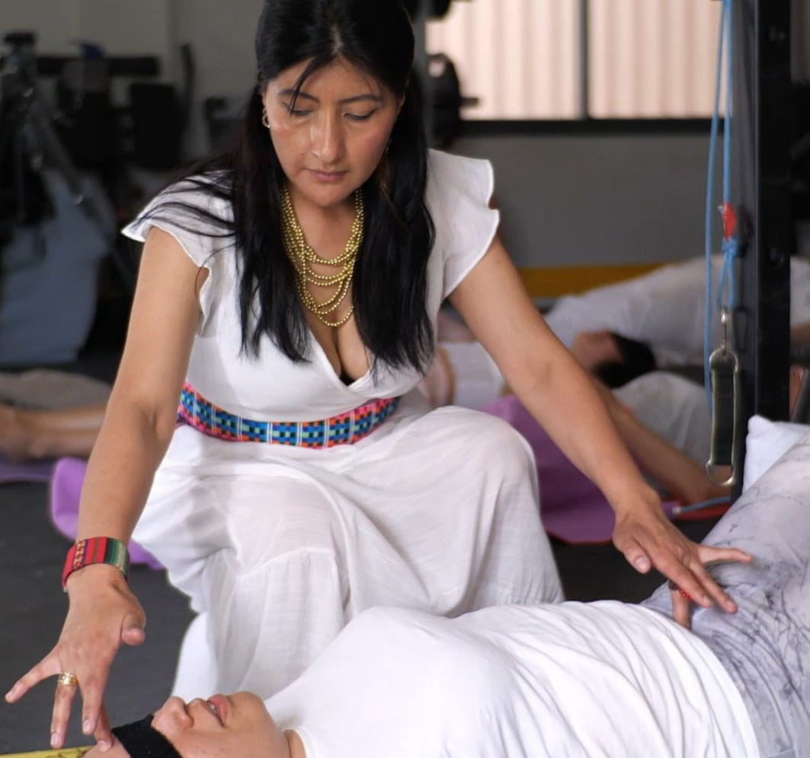
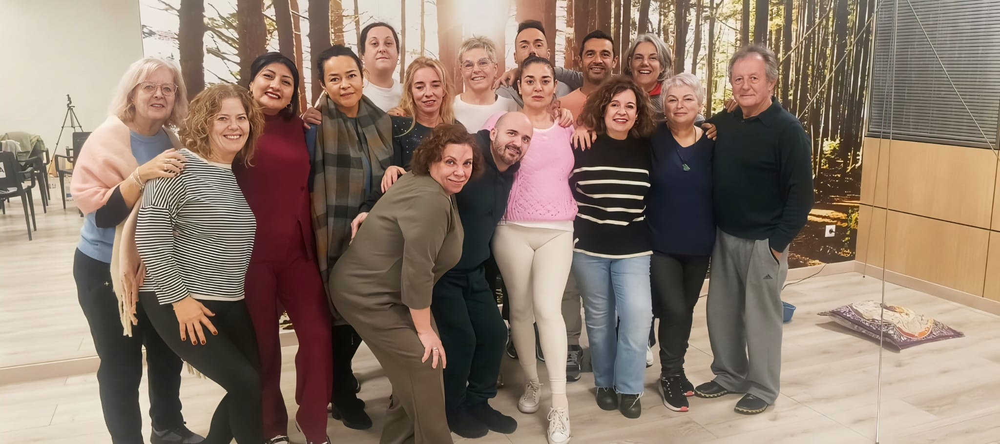
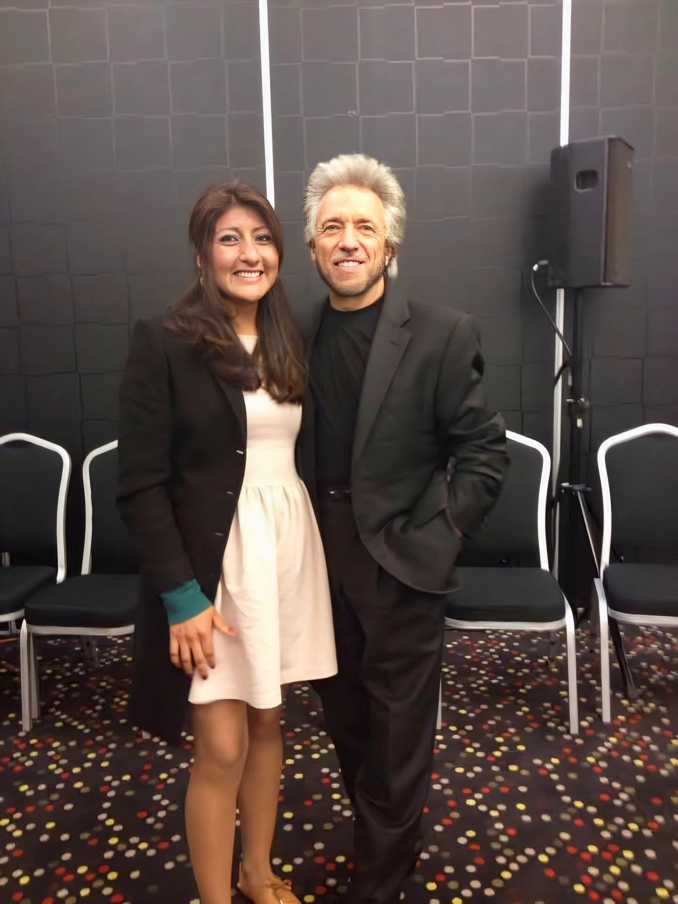

Sesión de bienestar
Un espacio individual para pausar, conversar y explorar prácticas de descanso y presencia. La sesión se adapta al momento y las necesidades de cada persona.
Acompañamiento personal, descanso consciente y experiencias diseñadas para escuchar tu cuerpo y reconectar con tu bienestar.
PRESENCIA · ESCUCHA · CUIDADO

Propuestas orientadas a la relajación, la atención personal y el autocuidado, en un ambiente sereno y respetuoso.
Un espacio individual para pausar, conversar y explorar prácticas de descanso y presencia. La sesión se adapta al momento y las necesidades de cada persona.
Una experiencia suave centrada en la conciencia corporal, la postura y la relajación, acompañada desde la escucha y el respeto al propio ritmo.
Sonidos, cuencos y vibraciones para crear una atmósfera de calma y acompañar prácticas de respiración y relajación.
Un encuentro de cuidado corporal y descanso profundo, pensado para ofrecer una pausa consciente en un entorno tranquilo.
Una propuesta de acompañamiento energético creada por Kam Yuen a partir de su trayectoria en artes marciales, quiropráctica, análisis estructural y trabajo energético.
Un momento para conocer el espacio, resolver dudas y recibir orientación sobre la experiencia que mejor encaje contigo.
Una técnica con identidad propia, lenguaje propio y una comunidad internacional de practicantes y formadores.
El Método Yuen fue desarrollado por Kam Yuen a partir de su trayectoria en artes marciales Shaolin, quiropráctica, análisis estructural y disciplinas energéticas. Sus escuelas utilizan conceptos como “debilidades” y “fortalecimientos” para describir su forma de trabajo.

“Comprender el origen y la filosofía de una técnica cambia la manera de vivir la experiencia.”
ALFA Y OMEGADesde Kam Yuen, el método se ha difundido mediante escuelas, cursos y formadores en distintos países. Algunas organizaciones contemporáneas estructuran la enseñanza en niveles I, II y III y forman terapeutas que integran el método en su práctica profesional.

Pregunta por disponibilidad, duración y condiciones de la sesión.
Entender una técnica antes de reservar ayuda a vivir la experiencia con más contexto. Esta sección reúne conceptos clave, historia y recursos para seguir profundizando.
Dentro de las escuelas Yuen aparecen conceptos propios que forman parte de su forma de enseñar y practicar el método.
Alfa y Omega puede recomendar recursos externos para quien quiera profundizar en la historia y la formación del método, distinguiéndolos claramente de los servicios propios del centro.
No todas las personas buscan lo mismo. Por eso explicamos con claridad la esencia de cada experiencia, cómo se desarrolla y qué tipo de momento puede acompañar.
El Método Yuen nace de la síntesis personal de Kam Yuen entre artes marciales Shaolin, quiropráctica, análisis estructural y prácticas energéticas. La sesión se plantea como un proceso de observación y acompañamiento en el que el profesional aplica la metodología aprendida dentro de esta escuela.
Las escuelas contemporáneas del método utilizan una terminología propia. Comprenderla ayuda a llegar a la sesión sabiendo qué significa cada concepto dentro de esta práctica.
Además de la documentación del Yuen Method, existen escuelas y formadores contemporáneos que difunden la técnica. José Palomo presenta programas de niveles I–II–III y una red internacional de alumnos y terapeutas.
Cuencos, gongs, campanas, voz u otros instrumentos pueden crear un paisaje sonoro envolvente. La atención deja de estar puesta en la actividad cotidiana y se dirige a la escucha, la respiración y las sensaciones que produce el sonido en el espacio.
Esta experiencia sitúa el cuerpo en el centro. El trabajo manual se desarrolla en un ambiente tranquilo y busca crear un espacio de cuidado, desconexión y descanso, adaptando el ritmo de la sesión a la persona.
Spine Healing se presenta en Alfa y Omega como una experiencia suave centrada en la columna, la postura, el movimiento y la percepción corporal. La ficha histórica de esta web recoge como referencia europea el Método Dorn, desarrollado por Dieter Dorn en Alemania desde la década de 1970.
Cada experiencia de Alfa y Omega forma parte de una tradición concreta. Aquí reunimos su origen, las personas que impulsaron su desarrollo y la forma en que esas prácticas llegaron al bienestar contemporáneo.
El Método Yuen fue creado por Kam Yuen, nacido en Hong Kong en 1941. Su trayectoria reunió disciplinas que, a primera vista, pertenecen a mundos distintos: ingeniería, quiropráctica y décadas de práctica de artes marciales Shaolin Tai Mantis Kung-Fu.
La propia escuela Yuen describe el método como una síntesis de su experiencia en artes marciales, anatomía, fisiología, análisis estructural, Qi Gong y Shen Gong. Durante la segunda mitad del siglo XX, Yuen fue organizando estas influencias en un sistema propio de observación, identificación de “debilidades” y fortalecimiento energético.
Con el tiempo surgieron formadores y comunidades que ayudaron a difundir el método internacionalmente. Entre ellas, la escuela del ingeniero José Palomo presenta actualmente una enseñanza organizada en niveles I, II y III, cursos especializados y una red de terapeutas formados en distintos países. Esa estructura ilustra cómo el Método Yuen ha pasado de la enseñanza de su creador a una comunidad contemporánea de práctica y formación.
El uso del sonido con fines rituales, contemplativos y de bienestar aparece en numerosas culturas antiguas. Fuentes históricas documentan ideas sobre música y bienestar en Mesopotamia, Egipto, Israel y la Grecia clásica, mucho antes de que existiera la sonoterapia con su nombre actual.
La sonoterapia contemporánea reúne esa herencia con instrumentos como gongs, campanas, voz, cuencos metálicos y cuencos de cristal. Los llamados sound baths o baños de sonido adquirieron su forma moderna especialmente durante el siglo XX, al confluir música experimental, meditación, espiritualidad y nuevas corrientes de bienestar.
El masaje es una de las prácticas corporales más antiguas conocidas. Distintas formas de trabajo manual aparecen históricamente en culturas de Asia, Oriente Próximo, Grecia y Roma. Con el paso de los siglos, esas tradiciones evolucionaron en múltiples escuelas de masaje y cuidado corporal.
En Europa, una figura decisiva fue el sueco Pehr Henrik Ling (1776–1839). Su sistema de movimiento y gimnasia, desarrollado a comienzos del siglo XIX y enseñado desde el Real Instituto Central de Gimnasia de Estocolmo fundado en 1813, influyó profundamente en la posterior tradición del masaje sueco o clásico.
Dentro del bienestar corporal europeo surgieron durante el siglo XX distintas escuelas centradas en la movilidad, el equilibrio postural y el trabajo suave sobre la columna. Una de las corrientes más conocidas asociadas al concepto de spine healing es el Método Dorn, desarrollado en el sur de Alemania por Dieter Dorn (1938–2011).
La historia del método sitúa su punto de partida en 1973, después de una experiencia personal de Dorn con dolor lumbar. Durante los años siguientes desarrolló y enseñó un enfoque manual suave acompañado de movimiento activo. A finales de los años 80 comenzó a difundirse formalmente bajo el nombre de Método Dorn y posteriormente se extendió fuera de Alemania.
Cada experiencia comienza con una conversación sencilla y respetuosa para encontrar el espacio que necesitas.
Conocer tu momento, tus preguntas y aquello que quieres cuidar.
Explorar contigo la experiencia que mejor encaja con tus necesidades.
Crear un tiempo de presencia, calma y atención personal.
Una experiencia de bienestar también se construye desde la confianza. Aquí mostraremos quién acompaña cada sesión, su trayectoria, escuelas de formación, certificaciones y años de práctica, para que el visitante conozca a la persona antes de reservar.

Presencia, escucha y cuidado son parte esencial de la experiencia. El perfil profesional completo se publicará con el nombre, trayectoria y certificaciones facilitadas por el propio equipo.

Esta área permitirá al visitante conocer quién realiza cada técnica, desde cuándo la practica y dónde se ha formado, reforzando la confianza antes del primer contacto.
La sección está preparada para incorporar testimonios propios de Alfa y Omega —nombre o iniciales, servicio realizado y experiencia personal— en cuanto el cliente autorice su publicación. No utilizaremos testimonios ajenos ni inventados.
Antes de reservar, podrás conocer quién realiza cada experiencia, qué técnicas practica y cuál es su formación. Esta sección está preparada para mostrar únicamente información verificada por el propio equipo.
En cuanto el cliente nos facilite nombres completos, especialidades, años de práctica y certificados, cada ficha quedará vinculada a las técnicas que realmente ofrece.
Perfil preparado para incorporar biografía, filosofía de trabajo y experiencia profesional.
Espacio preparado para presentar trayectoria, especialidades y forma de acompañamiento.

Ficha disponible para incorporar colaboradores o profesionales vinculados a experiencias concretas del centro.
Los perfiles definitivos mostrarán únicamente datos, certificaciones y especialidades confirmadas por cada profesional.
Conoce el ambiente y las personas que dan forma a Alfa y Omega.
Además de las sesiones, Alfa y Omega puede ofrecer contenido educativo y prácticas guiadas para acercar cada técnica a quien quiera conocerla antes de reservar.
Un espacio para explicar sus conceptos principales: debilidades, fortalecimientos, observación y estructura de una sesión.
Ver guía del método →La futura biblioteca podrá incluir audios propios de sonoterapia, respiración o paisajes sonoros creados por Alfa y Omega.
Conocer sonoterapia →Artículos, vídeos y materiales breves para entender mejor las distintas experiencias del centro y su historia.
Explorar recursos →La sección está preparada para enlazar vídeos de YouTube, audios, meditaciones o fortalecimientos creados por el equipo.
Los testimonios ayudan a transmitir cómo se siente la experiencia desde la voz de quien ya la ha probado. Publicaremos únicamente opiniones reales y autorizadas.
Respuestas claras para entender mejor cada técnica, cómo funciona una cita y cómo elegir la experiencia que más encaja contigo.
MÉTODO YUEN · SONOTERAPIA · MASAJE HEALING · SPINE HEALING
Es una metodología creada por Kam Yuen que integra influencias de artes marciales Shaolin, quiropráctica, análisis estructural y prácticas energéticas. Dentro de su propio lenguaje se trabaja con conceptos como “debilidades” y “fortalecimientos”. En Alfa y Omega la experiencia se presenta como una sesión de acompañamiento energético y observación personal.
El método fue desarrollado durante la segunda mitad del siglo XX por Kam Yuen. Su trayectoria combinó formación técnica, trabajo corporal, artes marciales y disciplinas energéticas. Con el tiempo surgieron escuelas y formadores que difundieron la práctica internacionalmente y organizaron la enseñanza en distintos niveles.
La sesión comienza con una conversación breve para conocer qué quieres explorar. Después el profesional aplica la metodología propia del sistema Yuen, utilizando observación y fortalecimientos según su formación. Al final se reserva un momento para comentar la experiencia.
Es uno de los términos centrales del lenguaje del método. Se utiliza para describir las intervenciones o secuencias que el practicante emplea cuando identifica una “debilidad” dentro de la metodología Yuen.
Es una experiencia basada en sonido, vibración y escucha consciente. Puede incluir cuencos, gongs, campanas, voz u otros instrumentos. La sesión crea un entorno sonoro inmersivo en el que la atención se dirige a la respiración, el silencio y las sensaciones del momento.
La experiencia suele empezar con unos minutos de preparación y respiración. Después se desarrolla un recorrido sonoro con distintos timbres e intensidades, seguido de un cierre más silencioso para integrar la experiencia antes de volver a la actividad cotidiana.
El Masaje Healing pone el contacto corporal en el centro de la experiencia. Está orientado al descanso, la pausa y el cuidado personal, mientras que sonoterapia trabaja desde el sonido y Método Yuen desde su propia metodología energética.
En Alfa y Omega se presenta como una experiencia corporal suave centrada en la columna, la postura, el movimiento y la conciencia corporal. La ficha histórica de la web recoge como referencia europea el Método Dorn, desarrollado en Alemania desde la década de 1970.
No necesitas decidirlo todo antes de contactar. Puedes explicar si buscas una experiencia corporal, sonora, energética o simplemente una pausa de bienestar, y el equipo te orientará sobre las opciones disponibles.
Quienes se acercan a esta técnica suelen hacerlo por interés en equilibrio personal, autoconocimiento, gestión de bloqueos percibidos o curiosidad por el trabajo energético. La experiencia depende de cada persona y de la forma de trabajar del profesional.
Dentro de la práctica de bienestar, el Método Yuen se utiliza en sesiones de acompañamiento energético, procesos de autoconocimiento y trabajo personal. Alfa y Omega lo presenta desde esa perspectiva de experiencia y acompañamiento.
Personas interesadas en técnicas energéticas, desarrollo personal, prácticas de conciencia corporal o enfoques de bienestar no convencionales suelen sentirse atraídas por este tipo de experiencia.
Lo más sencillo es solicitar una primera consulta. El equipo puede explicarte la dinámica, resolver tus preguntas y ayudarte a decidir si quieres vivir una sesión completa.
Puedes hacerlo desde cualquier botón de WhatsApp de la web. Cada técnica genera un mensaje diferente para que el equipo sepa qué experiencia te interesa y pueda responderte con disponibilidad, duración y precio.
Sí. La primera conversación sirve para resolver dudas sobre la técnica, conocer quién realiza la sesión y confirmar condiciones antes de reservar.
La web incluye un directorio de profesionales y una sección específica de formación. Los perfiles definitivos mostrarán únicamente certificaciones, escuelas, años de práctica y técnicas confirmadas por cada integrante del equipo.
Alfa y Omega puede reunir en un solo espacio sus vídeos, audios, entrevistas, reflexiones y novedades. La web queda preparada para conectar los canales propios del proyecto cuando el cliente los confirme.
Queremos que puedas decidir con tranquilidad y saber qué esperar antes de contactar.
La duración, modalidad, disponibilidad y precio se confirman antes de reservar. Pregunta cualquier duda antes de concertar la cita.
Cada sesión se adapta al momento de la persona, al tipo de experiencia elegida y al ritmo con el que desea vivirla.
Los datos de contacto se utilizan para responder consultas, organizar la cita y mantener la comunicación necesaria con cada cliente.
Cuéntanos qué necesitas y recibirás información sobre disponibilidad, modalidad y condiciones de cada experiencia.
Abrir WhatsApp →